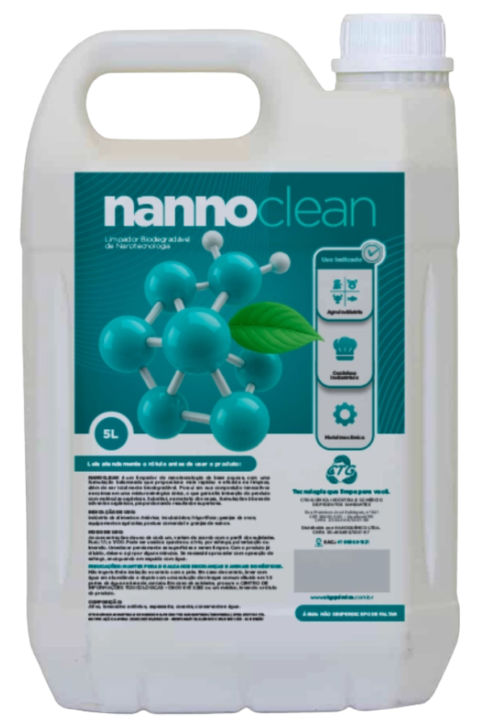
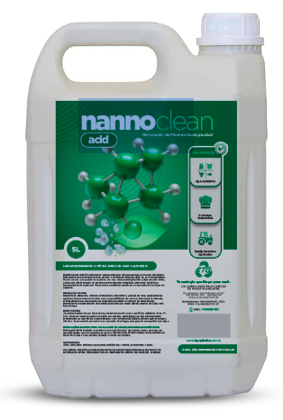
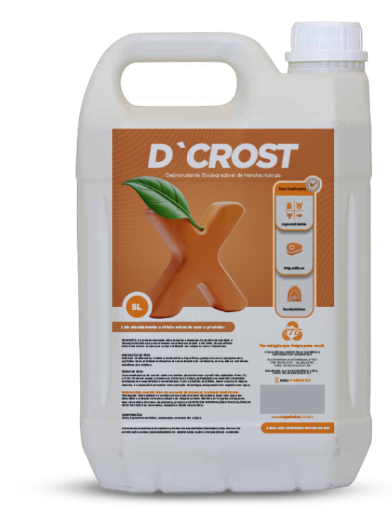
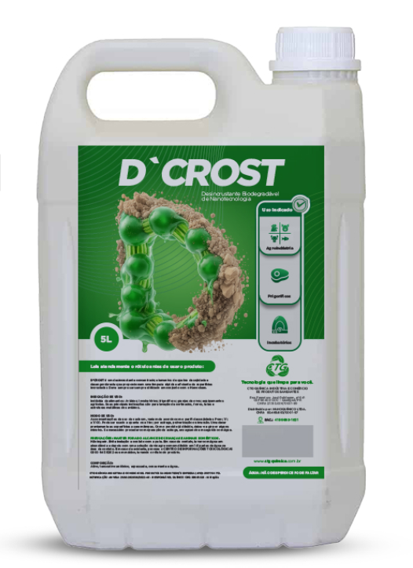
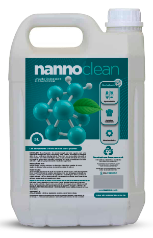

Soluções Químicas de Alta Performance para Avicultura Moderna
A CTG-Química desenvolve tecnologias de ponta voltadas à biosseguridade e eficiência operacional do setor avícola. Com base em nanotecnologia e formulações de base aquosa, nossos produtos foram projetados para atender aos rigorosos padrões sanitários exigidos em incubatórios, granjas de matrizes e unidades de processamento de ovos e carne.
Nossa linha de produtos oferece uma abordagem integrada para a manutenção do status sanitário, focando na eliminação de desafios biológicos e na otimização da limpeza técnica:
Higienização de Alta Performance (Linha Nannoclean): Utilizando uma mistura sinérgica de tensoativos e enzimas, o Nannoclean atua na desintegração de moléculas orgânicas complexas. É a solução ideal para a limpeza profunda de bandejas de incubação, nascedouros e áreas de processamento, substituindo solventes agressivos por uma alternativa biodegradável e de alta eficácia.
Gestão de Biosseguridade e Ambientes: Desenvolvemos insumos específicos para o controle ambiental em aviários. Nossas soluções de limpeza e desinfecção auxiliam na redução da carga patogênica,endendo um ambiente seguro para o desenvolvimento do lote e minimizando riscos de contaminação cruzada.
Manutenção de Ativos e Frotas (Bioclean Car): Especialmente desenhado para a logística do setor, permite a higienização completa de caminhões de transporte de aves vivas, pintinhos e rações. Garante a remoção de sujidades severas e biofilmes sem agressir a lataria ou componentes metálicos, dispensando o esforço físico excessivo.
Tratamento de Água e Efluentes: Além dos insumos de limpeza, oferecemos suporte tecnológico para a preservação e tratamento de recursos hídricos nas unidades industriais, assegurando a conformidade com as normas ambientais vigentes.
Os produtos da CTG-Química são formulados para entregar o máximo rendimento com o menor impacto ambiental. Focamos em soluções que reduzem o tempo de manejo e o consumo de água, otimizando o custo operacional (TCO) das operações avícolas. Com entrega pontual e suporte técnico, garantimos que sua unidade mantenha os mais altos índices de produtividade e segurança alimentar.
Nossos Produtos

Limpador enzimático de base aquosa...
ideal para a desintegração de matéria orgânica pesada (fezes e gordura) em galpões e incubatórios. Por ser biodegradável, é seguro para o ambiente produtivo.

Recomendado para a limpeza de sistemas de linha de bebida...
(bebedouros nipple) e sistemas de resfriamento (cooling), removendo incrustações minerais e biofilmes que podem obstruir os equipamentos.
 Sistemas de Resfriamento
Sistemas de Resfriamento

Desincrustante de alta potência para a limpeza profunda...
de pisos e superfícies impregnadas durante o vazio sanitário, garantindo a quebra da sujidade mais persistente.

Desincrustante concentrado de alto desempenho...
para limpeza de pisos e superfícies com sujidades complexas. Sua tecnologia foi desenvolvida para superar os limites dos produtos comuns, atuando com precisão em camadas de difícil remoção.

Repelente 100% natural...
fundamental para o controle de moscas e outros insetos nos galpões e áreas de compostagem. Sua composição atóxica permite o uso frequente sem riscos ao plantel ou aos operadores.
Áreas de Compostagem
Atua na remoção de ferrugem e proteção...
de silos, transportadores de ração, ventiladores e demais estruturas metálicas sujeitas à oxidação em ambientes de alta umidade.
 Silos
Estruturas Metálicas
Silos
Estruturas Metálicas
Indicado para o gerenciamento de lagoas de tratamento...
de dejetos e estações de tratamento de água, eliminando a espuma e aumentando a eficiência dos processos químicos e biológicos.
Estações de Tratamento
Solução para a limpeza da frota de transporte...
de aves vivas e caminhões de ração. Remove a sujidade pesada sem necessidade de ácidos agressivos, preservando a vida útil dos veículos.
Caminhões de Aves
Caminhões de Ração
Detergente nanotecnológico para a lavanderia industrial...
garantindo a higienização completa e a remoção de odores orgânicos dos uniformes e equipamentos de proteção individual (EPIs).
 Lavanderia Industrial
Lavanderia Industrial